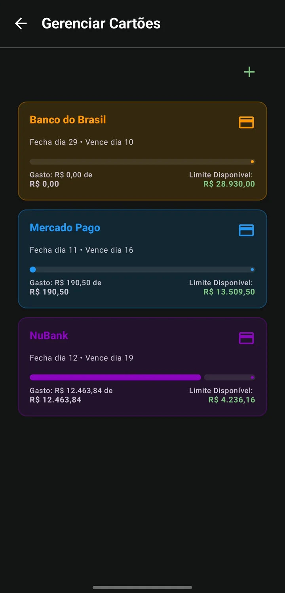
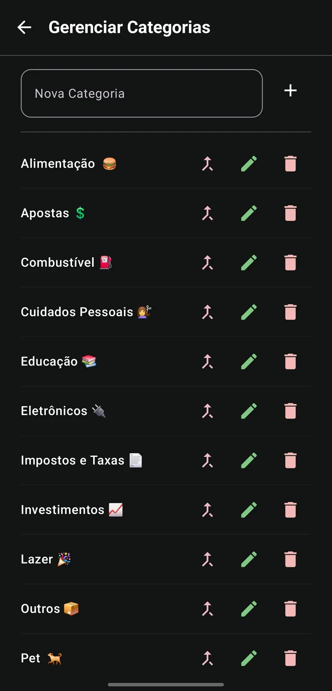

O núcleo financeiro
The financial core
Despesas, rendas, cartões, recorrência e assinaturas funcionam da mesma forma nos perfis Pessoal e Negócios, cada um no seu espaço.
Expenses, income, cards, recurrence and subscriptions work the same way in the Personal and Business profiles, each in its own space.
Despesas
Expenses
Toque no + e escolha despesa. Informe descrição, valor, vencimento e categoria. Uma despesa pode ser avulsa, recorrente (repete todo mês) ou parcelada (dividida em N vezes). Toque longo no card para pagar, editar ou excluir.
Tap + and choose expense. Enter description, amount, due date and category. An expense can be one-off, recurring (repeats monthly) or installment (split into N). Long-press the card to pay, edit or delete.
Rendas
Income
Na aba Rendas, você adiciona seus ganhos (salário, freelas) manualmente nos perfis Pessoal e Negócios. O Silica usa a renda do mês para calcular quanto do seu dinheiro está comprometido com as contas.
In the Income tab you add your earnings (salary, freelance) manually in the Personal and Business profiles. Silica uses the month's income to calculate how much of your money is committed to bills.
Lá as rendas surgem automaticamente: o lucro de uma venda ou o valor de um serviço vira renda quando você marca como recebido. Veja em Vendas e Serviços.
There, income appears automatically: a sale's profit or a service's amount becomes income when you mark it as received. See Sales and Services.
Recorrência (contas que se repetem)
Recurrence (repeating bills)
Ao criar uma despesa ou renda, marque recorrente/assinatura para ela se repetir todo mês. O Silica materializa a série por 12 meses à frente e a renova automaticamente conforme o tempo passa. Sua dívida nunca "some" da timeline.
When creating an expense or income, toggle recurring/subscription so it repeats every month. Silica materializes the series 12 months ahead and auto-renews it as time passes. Your bill never "disappears" from the timeline.
- Você cria "Aluguel, R$ 1.500" como recorrente em janeiro.
- You create "Rent, $300" as recurring in January.
- O app cria 12 ocorrências (jan a dez) e, mês a mês, adiciona novas à frente para manter sempre ~12 meses visíveis.
- The app creates 12 occurrences (Jan–Dec) and, month by month, adds new ones ahead to always keep ~12 months visible.
Regras que protegem seu histórico
Rules that protect your history
- Uma série ativa por descrição. Se você tentar criar uma recorrente com um nome que já existe, o app avisa, evitando cobrar a mesma conta duas vezes no mês.
- One active series per description. If you try to create a recurring bill with a name that already exists, the app warns you, preventing the same bill being charged twice in a month.
- Encerrar recorrência preserva o passado. Ao encerrar, as cobranças futuras somem, mas todas as parcelas já pagas continuam no histórico.
- Ending recurrence preserves the past. When you end it, future charges disappear, but every already-paid entry stays in history.
- Recorrentes não são excluídas direto pela timeline: o app te leva ao menu Assinaturas para encerrar a série inteira com segurança.
- Recurring items aren't deleted straight from the timeline: the app takes you to the Subscriptions menu to end the whole series safely.
Assinaturas
Subscriptions
A aba Assinaturas lista seus gastos recorrentes e calcula o impacto projetado até o fim do ano, ajudando a decidir o que cortar. Ao remover uma assinatura, o Silica encerra as cobranças futuras e mantém o histórico já pago. Você não perde o registro do que gastou.
The Subscriptions tab lists your recurring costs and computes the projected impact until year-end, helping you decide what to cut. When you remove a subscription, Silica ends future charges and keeps the paid history. You don't lose the record of what you spent.

Parcelamento exato
Exact installments
Ao parcelar uma despesa, o Silica divide por centavos: o resíduo vai para a última parcela, garantindo que a soma bata exatamente com o total. Nada de sobrar ou faltar um centavo.
When splitting an expense, Silica divides by cents: the remainder goes to the last installment, so the sum matches the total exactly. No missing or extra cent.
- R$ 100,00 em 3× → 33,33 + 33,33 + 33,34 = 100,00 (e não 99,99).
- $100.00 in 3× → 33.33 + 33.33 + 33.34 = 100.00 (not 99.99).
Ao excluir um item parcelado, o app pergunta se você quer remover só aquela parcela ou esta e todas as futuras.
When deleting an installment item, the app asks whether to remove just that one or this and all future ones.
Cartões de crédito & Faturas
Credit cards & Invoices
Cadastre seus cartões em Menu › Gerenciar Cartões (nome, limite, dia de fechamento, dia de vencimento, cor). Ao lançar despesas em um cartão, elas não aparecem soltas: o Silica agrupa tudo em uma fatura única por mês na timeline.
Register your cards in Menu › Manage Cards (name, limit, closing day, due day, color). When you add expenses to a card, they don't appear loose: Silica groups them into a single invoice per month in the timeline.
Como o mês da fatura é decidido
How the invoice month is decided
Se a compra cai a partir do dia de fechamento, entra na fatura do mês seguinte; senão, na fatura do mês atual.
If a purchase falls on or after the closing day, it goes into next month's invoice; otherwise, the current month's.
- Cartão fecha dia 20. Compra em 18/abril → fatura de abril.
- Card closes on the 20th. Purchase on Apr 18 → April invoice.
- Compra em 22/abril → cai na fatura de maio.
- Purchase on Apr 22 → goes to the May invoice.
Limite, abatimento e fatura reaberta
Limit, partial payment & reopened invoice
- Limite disponível = limite do cartão − soma das despesas não pagas.
- Available limit = card limit − sum of unpaid expenses.
- Abater valor: quando quiser liberar limite, um abatimento reduz o total da fatura (lança um valor negativo "Abatimento de Fatura").
- Partial payment: to free up limit, a partial payment reduces the invoice total (records a negative "Invoice Partial Payment").
- Fatura reaberta: se você compra de novo depois de pagar (antes do fechamento), a timeline mostra só o valor ainda não pago; o detalhamento Total / Em aberto / Pago fica no cabeçalho da fatura.
- Reopened invoice: if you buy again after paying (before closing), the timeline shows only the still-unpaid amount; the Total / Open / Paid breakdown is in the invoice header.
Você ainda pode ser avisado quando a fatura estiver prestes a fechar: ative o aviso por cartão em Gerenciar Cartões. Veja Notificações.
You can also be warned when an invoice is about to close: enable it per card in Manage Cards. See Notifications.


Categorias
Categories
Cada perfil tem seu próprio conjunto de categorias (Moradia, Transporte, Lazer, Assinaturas…). Elas alimentam o Raio-X e ajudam a enxergar para onde o dinheiro vai. Você pode criar e editar categorias, e o app sugere uma categoria automaticamente ao digitar descrições conhecidas.
Each profile has its own set of categories (Housing, Transport, Leisure, Subscriptions…). They feed the X-Ray and show where money goes. You can create and edit categories, and the app auto-suggests a category as you type known descriptions.
Saúde Financeira
Financial Health
O card de Saúde Financeira mostra o comprometimento da sua renda e um medidor visual. O cálculo é direto:
The Financial Health card shows how committed your income is, with a visual gauge. The math is straightforward:
- Saldo livre = saldo anterior + renda do mês − despesas do mês.
- Free balance = previous balance + month's income − month's expenses.
- Comprometimento = despesas do mês ÷ (saldo anterior + renda do mês).
- Commitment = month's expenses ÷ (previous balance + month's income).
- Ex.: saldo anterior R$ 1.000 + renda R$ 4.000 = R$ 5.000; despesas R$ 950 → comprometimento 19%, saldo livre R$ 4.050.
- E.g.: previous $200 + income $800 = $1,000; expenses $190 → 19% commitment, free balance $810.
Quando você quita tudo do mês, o app entra no Modo Zen: cores calmas e o medidor "respira", celebrando a organização.
When you clear everything for the month, the app enters Zen Mode: calm colors and a "breathing" gauge, celebrating your organization.
Contas pagas
Paid bills
Ao marcar uma conta como paga, ela sai da visão principal para manter o foco no que falta, indo para o grupo Contas Pagas no fim da timeline. Toque para expandir e ver o histórico do mês.
When you mark a bill as paid, it leaves the main view to keep the focus on what's pending, moving to the Paid Bills group at the end of the timeline. Tap to expand and see the month's history.
Editar & excluir
Edit & delete
Toque longo sobre um card para editar valores, datas e categorias, ou remover o item. Casos especiais:
Long-press a card to edit amounts, dates and categories, or remove the item. Special cases:
- Recorrente: o app oferece "Encerrar recorrência" (remove só o futuro, preserva o pago) ou o atalho para Assinaturas.
- Recurring: the app offers "End recurrence" (removes only the future, keeps the paid) or a shortcut to Subscriptions.
- Parcelado: escolha remover só a parcela ou esta e todas as futuras.
- Installment: choose to remove just that installment or this and all future ones.
Busca & filtros
Search & filters
Toque na lupa para buscar despesas por nome ou categoria (no Vendas, também clientes, produtos e Gerentes). Na timeline, o botão Filtrar mostra só pendentes/pagos e filtra por categoria; um indicador conta quantos filtros estão ativos. As listas de Rendas, Estoque e Assinaturas têm Ordenar (data, valor, nome).
Tap the search icon to find expenses by name or category (in Sales, also clients, products and Managers). In the timeline, the Filter button shows only pending/paid and filters by category; a badge counts active filters. The Income, Stock and Subscriptions lists have Sort (date, amount, name).